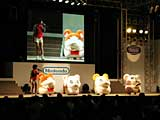
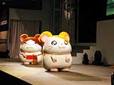

テレビやゲームでおなじみ、ゴールデンハムスターのハム太郎が、愉快な仲間たちと一緒に、任天堂スペースワールドにやってきた！
|
 ショー開幕10分前には、すでに観客席は家族連れで超満員。午前11時ちょうどに司会のお姉さんが登場、「とっとこハム太郎のテレビを見てる人、手を上げて〜!」と呼びかけると、ほとんどの子供が元気良く手を上げたのでした。観客席のみんなのノリは抜群。なかには、子供たちに混じって「はーい」と手を上げる楽しいお父さんもいました。
|
 このあと、子供たちみんなで「ハム太郎くーん」と叫ぶと、ついにハム太郎が登場。そしておなじみの仲間たちとドタバタの愉快な物語が繰り広げられたのですが、26日にもショーが開催されるので、詳しいお話の内容はここではナイショ。見逃した人は、ぜひ26日に実際に会場で見て楽しんでくださいね。
|
ハム太郎たちがステージに出てきてからはずっと、子供たちの目は一点に釘付け。あらためてハム太郎の爆発的な人気を知ることができました。劇が終わると、子供たちも参加のクイズ大会も行われ、大盛り上がりでショーは幕を閉じたのでした。めでたし、めでたし。
|
余談ですが、2002年3月に任天堂から発売予定のゲームボーイアドバンス用ソフト、『とっとこハム太郎3 カップル大パニックでちゅ(仮称)』も楽しみですね。
|